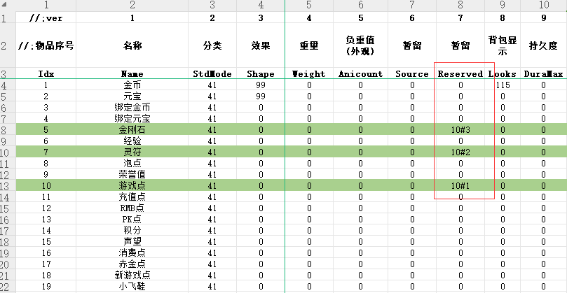

多货币关联使用功能 
表：cfg_item.xls表
设置方法：Reserved字段 货币组分类(数字)#优先扣除顺序
如：10#1
图介绍：10#3
10#1 10#2
10=这3个货币是一个类别的 后面的1 2 3 代表扣除的顺序
数字越小越优先扣除
检测多货币关联格式：CheckBindMoney 货币名称 检测符(> < =)
数量
获取多货币数量格式：GetBindMoney 货币名称 存入变量
扣除多货币数量格式：ChangeBindMoney 货币名称
数量
货币ID2(元宝)和4(绑定元宝)为系统默认关联货币不可再关联其他货币
说明：多货币只支持扣除，不支持增加，如果要增加请用其他命令
如：GAMEGOLD MONEY
货币关联后的检测和扣除原则：
1、货币关联后检测时顺序号大的货币自动替换货币小的,扣除时优先扣除顺序小的货币
2、关联货币也支持改名，例如金刚石→火龙币，灵符→绑定火龙币
MONEY
火龙币 + 100
ChangeBindMoney 游戏点
100
如果你的金刚石有100个，游戏点有200个，关联检测货币名为游戏点值为200+100=300，如果检测的货币名为金刚石则值为100
关联后的货币只想检测某一种的话，请使用CHECKMONEY
[@MAIN]
#IF
CheckBindMoney 游戏点 >
299
#ACT
ChangeBindMoney 游戏点 300
SENDMSG 7
当前游戏点<$MONEY(游戏点)>
#ELSEACT
SENDMSG 7 游戏点不足
MONEY操作所有货币功能
CHECKMONEY 货币名称
检测符(> < = ?) 数量
MONEY 货币名称
检测符(+ - =) 数量
输出货币值:<$MONEY(货币名称)>
[@MAIN]
#IF
CHECKMONEY 元宝 ?
100
#ACT
sendmsg 7 大于100
MONEY 元宝 -
100
#IF
CHECKMONEY 元宝 > 1000
#ACT
sendmsg 7
小于1000
MONEY 元宝 - 1000
;关联货币操作
[@扣除关联货币]
#IF
#ACT
ChangeBindMoney 元宝 300
SENDMSG 6
你扣除了和元宝关联的货币300个
[@获取多货币]
#IF
#ACT
GetBindMoney 元宝 S1
SENDMSG 6
你当前关联元宝的货币有:<$STR(S1)>个。
[@多货币]
#IF
CheckBindMoney 元宝 > 300
#ACT
SENDMSG 6
你的元宝关联货币足够
#ELSEACT
SENDMSG 6 你的元宝关联货币不足够